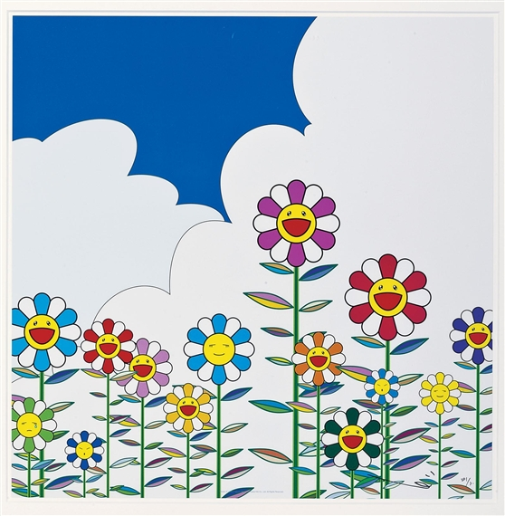

During the years of 2002 to now, 2025, Takashi Murakami's artwork had completely exploded in popularity, reach, and recognization. In 2002, Takashi had successfully collaborated with Louis Vuitton, created multiple clothing items and accessories with them, and made one of his most reognizable pieces, "Flowers", pictured below.
From then on, it only got better and better for Murakami. In 2007, he collaborated with the multi Grammy-award winning rapper Kanye West for his album "Graduation", creating the instantly recognizable, grounbreaking hip-hop album cover that had the ocurring Graduation Bear on it. It started and allowed a major change in album covers for hip-hop and rap as a whole. It was bold, colorful, and vibrant in a time when most album covers were dark and gritty like Pharoahe Monch's album cover for "Desire", Wu-Tang Clan's for "8 Diagrams", or 50 Cent's for 'Curtis' (Which was in friendly competiton with Graduation by releasing on the same day). "Graduation" went on to sell 957,000 copies first week and was a massive success among critics and fans.
Takashi Murakami's artwork influence was also felt again in 2018 when Kanye West and Kid Cudi collaborated under the duo name "KIDS SEE GHOSTS" and released their self-titled album in 2018. It, like Graduation, was a massive success among critics and fans, selling 149,000 copies in just the first week. Along with this, he had multiple other collaborations and numerous other art exhibitions. And then, finallly, Takashi Murakami's influence would be felt again on January 16, 2025, when he collaborated again with Louis Vuitton to make numerous handbags, shoes, and rug designs with his iconic flower designs.